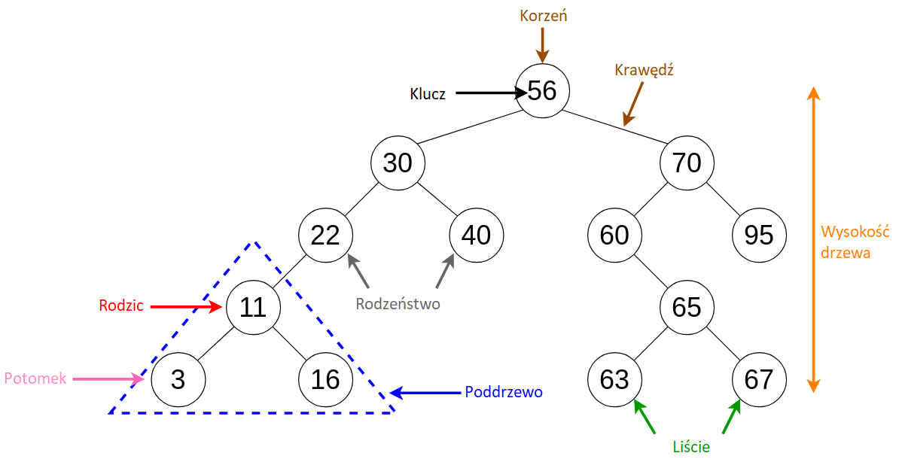
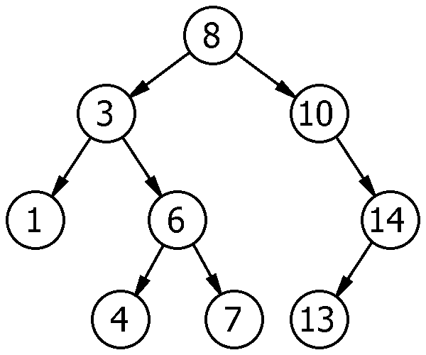
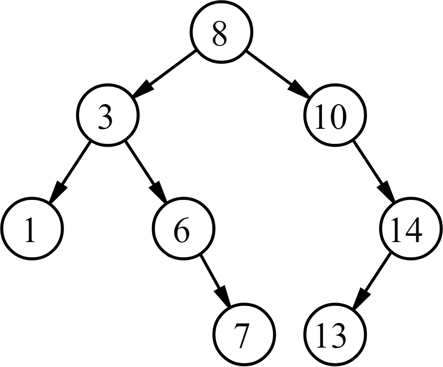
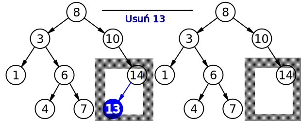
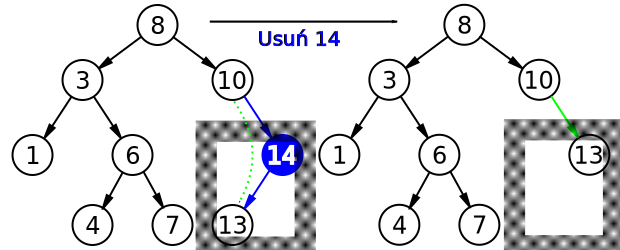
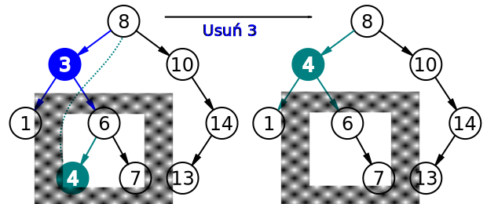

Drzewo poszukiwań binarnych (ang. Binary Search Tree, w skrócie BST) jest jednym z rodzajów drzewa binarnego, czyli takiego, w którym każdy z węzłów (elementów drzewa) może posiadać
maksymalnie dwóch bezpośrednich potomków.
Za pomocą drzewa poszukiwań binarnych możliwe jest wyszukiwanie binarne, które jest szybsze niż zwykłe, liniowe. Węzły w drzewie BST są zatem
uporządkowane w ścisłej hierarchii:
lewy potomek węzła ma klucz o wartości nie większej od wartości klucza rodzica (węzła nadrzędnego),
prawy potomek węzła ma zawsze klucz o większej wartości od wartości klucza rodzica.
Przykładowe drzewo poszukiwań binarnych
Własności drzewa BST sprawiają, że może być ono wykorzystane jako słownik lub kolejka priorytetowa.
Kilka pojęć związanych z drzewem BST
Prawie każdy z węzłów w drzewie binarnym posiada węzeł nadrzędny, zwany rodzicem. Wyjątkiem jest węzeł główny drzewa binarnego, zwany korzeniem.
Jeżeli dany węzeł nie posiada lewego i/lub prawego potomka, to za wartość potomka przyjmuje się NULL, czyli brak wartości.
Węzeł nieposiadający potomków nazywany jest liściem.
Węzły posiadające wspólnego rodzica nazywamy rodzeństwem.

Drzewo poszukiwań binarnych i jego elementy
Najmniejszym elementem drzewa poszukiwań binarnych jest węzeł znajdujący się najdalej na lewo od korzenia:
TREE-MINIMUM(x)
1. while left[x] != NULL
2. do x = left[x]
3. return x
natomiast największym elementem w drzewie jest - analogicznie - węzeł znajdujący się najdalej na prawo od korzenia:
TREE-MAXIMUM(x)
1. while right[x] != NULL
2. do x = right[x]
3. return x
Węzły mogą także posiadać swojego następnika lub poprzednika. Następnik w drzewie BST to element o najmniejszej wartości większej od wartości klucza węzła.
Dlatego też można go odnaleźć za pomocą poniższego algorytmu:
TREE-SUCCESSOR(x)
1. if right[x] != NULL
2. then return TREE-MINIMUM(right[x])
3. y = parent[x]
4. while y != NULL and x == right[y]
5. do x = y
6. y = parent[y]
7. return y
Analogicznie można wyznaczyć poprzednika danego węzła - jest to po prostu największy element, który jest mniejszy od danego węzła:
TREE-PREDECESSOR(x)
1. if left[x] != NULL
2. then return TREE-MAXIMUM(left[x])
3. y = parent[x]
4. while y != NULL and x == left[y]
5. do x = y
6. y = parent[y]
7. return y
Przeszukiwanie BST
Własność drzewa BST umożliwia wypisanie wszystkich jego węzłów na 3 sposoby: metodą inorder, preorder lub postorder.
Metoda inorder pozwala na wypisanie elementów w drzewie binarnym od węzła najdalej na lewo do węzła najdalej na prawo od korzenia.
Po węzłach przechodzi zgodnie ze schematem: lewy potomek, węzeł, prawy potomek, rodzic. W ten sposób dla drzewa BST można uzyskać posortowany ciąg elementów:
INORDER-TRAVERSAL(x)
1. if x != NULL then
2. INORDER-TRAVERSAL(left[x])
3. print(key[x])
4. INORDER-TRAVERSAL(right[x])

Przechodzenie po drzewie BST metodą inorder
Metoda preorder pozwala na wypisanie elementów w drzewie BST od korzenia, poprzez lewych sąsiadów węzłów, do prawych sąsiadów:
PREORDER-TRAVERSAL(x)
1. if x != NULL then
2. print(key[x])
3. then PREORDER-TRAVERSAL(left[x])
4. PREORDER-TRAVERSAL(right[x])
Przechodzenie po drzewie BST metodą preorder
Metoda postorder pozwala na wypisanie elementów w drzewie BST w kolejności od lewej do prawej
dla danej wysokości drzewa startując najwyżej i zmierzając do korzenia:
POSTORDER-TRAVERSAL(x)
1. if x != NULL then
2. POSTORDER-TRAVERSAL(left[x])
3. POSTRDER-TRAVERSAL(right[x])
4. print(key[x])
Przechodzenie po drzewie BST metodą postorder
Średnia złożoność czasowa operacji przechodzenia po drzewie binarnym wynosi O(n).
Dodawanie i usuwanie węzłów
Dodawanie węzła do drzewa BST wykonywane jest zgodnie z poniższą procedurą. Do procedury tej przekazywany jest węzeł z, posiadający jako klucz key[z]:
TREE-INSERT(T, z)
1. y = NULL
2. x = root[T]
3. while x != NULL
4. do y = x
5. if key[z] < key[x]
6. then x = left[x]
7. else x = right[x]
8. parent[z] = y
9. if y == NULL
10. then root[T] = z
11. else if key[z] < key[y]
12. then left[y] = z
13. else right[y] = z
Poniżej znajduje się animacja przedstawiająca proces wstawiania węzła do drzewa BST:

Wstawianie elementu do drzewa BST
Trudniejszą operacją jest usunięcie węzła, ponieważ operacja ta często wiąże się z restrukturyzacją położenia węzłów.
W zależności od posiadanych potomków węzła z rozważamy 3 przypadki:
Jeżeli węzeł z nie posiada potomków, to w rodzicu zastępujemy wskaźnik do z wartością NULL

Usunięcie węzła o kluczu 14 - przypadek węzła bez potomków
Jeżeli węzeł z posiada jednego potomka, to zastępujemy węzeł z węzłem jego potomka

Usunięcie węzła o kluczu 13 - przypadek węzła posiadającego jednego potomka
Jeżeli węzeł z posiada obydwu potomków, to zastępujemy węzeł z następnikiem nie posiadającym lewego potomka

Usunięcie węzła o kluczu 3 - przypadek węzła z obydwoma potomkami
Całość tą można zaimplementować jak w poniższym algorytmie, gdzie węzeł y może reprezentować węzeł z lub jego następnika,
kiedy węzeł z ma obydwu potomków:
TREE-DELETE(T, z)
1. if left[z] == NULL or right[z] == NULL
2. then y = z
3. else y = TREE-SUCCESOR(z)
4. if left[y] != NULL
5. then x = left[y]
6. else x = right[y]
7. if x != NULL
8. then parent[x] = parent[y]
9. if parent[y] == NULL
10. then root[T] = x
11. else if y == left[parent[y]]
12. then left[parent[y]] = x
Symulacja
W poniższej symulacji możesz sam utworzyć własne drzewo binarne lub wygenerować je losowo.
Liczba węzłów:
Wysokość drzewa:
Kliknij na węzeł, aby go usunąć
Więcej informacji
Więcej o drzewach binarnych możesz dowiedzieć się z poniższego filmu:
O projekcie
Projekt ten został zrealizowany w celu zadania na przedmiot "Techniki internetowe", 5 semestr. Celem tego projektu
było wykorzystanie HTML, CSS i JavaScript do przedstawienia wybranego pojęcia z matematyki, fizyki lub informatyki.
Działanie projektu przetestowano na przeglądarkach Google Chrome oraz Firefox.